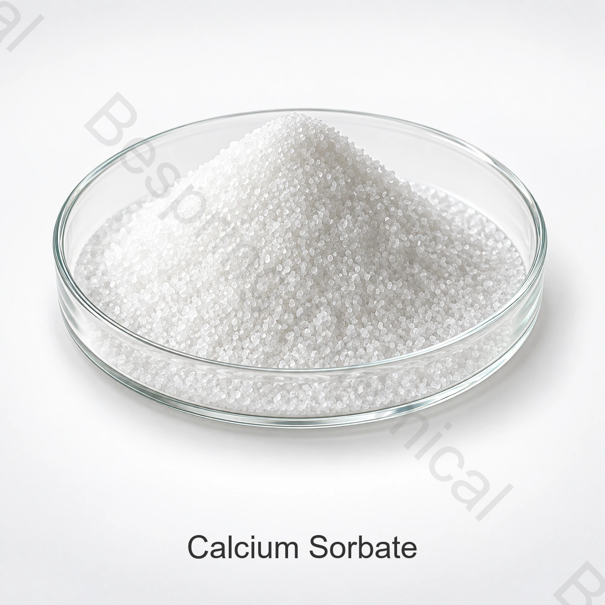

مكوّن بدرجة غذائية · E203 / INS 203
سوربات الكالسيوم E203
سوربات الكالسيوم ملح الكالسيوم لحمض السوربيك، وقد استُخدم ضد العفن والخمائر؛ إلا أن وضعه التنظيمي يختلف بين الأسواق ويجب التحقق منه قبل الشراء أو تطوير الوصفة.
- المنتج
- سوربات الكالسيوم E203
- رقم CAS
- CAS 7492-55-9
- التعريف
- E203 / INS 203
- الصيغة / المرجع
- C₁₂H₁₄CaO₄
أرسل التطبيق والمواصفة والحدود الحرجة والكمية والعبوة وبلد الوجهة.

الدرجةدرجة غذائية، رهناً باعتماد المصدر
العبوةتأكيد نوع العبوة والوزن الصافي ومتطلبات التحميل
التوريدعرض السعر حسب الكمية والوجهة وشروط Incoterms
مستندات الدفعةمواصفة سارية وشهادة تحليل للدفعة
إجابة فنية مباشرة
هوية المنتج وكيفية تحديد المواصفة
سوربات الكالسيوم ملح الكالسيوم لحمض السوربيك، وقد استُخدم ضد العفن والخمائر؛ إلا أن وضعه التنظيمي يختلف بين الأسواق ويجب التحقق منه قبل الشراء أو تطوير الوصفة.
لا يكفي الاسم التجاري للمشتريات الصناعية. اطلب مواصفة المصنع الحالية وطرق التحليل ونموذج شهادة تحليل وشهادة الدفعة، وقيّم المطابقة للتطبيق والمواصفة المتفق عليها وسوق بيع الغذاء.
الوظائف في الأغذية
الوظائف الرئيسية
شكل صلب من السوربات لتطبيقات محددة
مكوّن في أنظمة حفظ مسموح بها
تقييم التطبيقات
تطبيقات تتطلب التقييم
فئات الأغذية المسموح بها فقط
اختبارات مقارنة مع حمض السوربيك أو سوربات البوتاسيوم
الأسواق التي تسمح باستخدام E203
التطبيقات إرشادية وليست تصريحاً عاماً أو توصية بجرعة. يجب التحقق من الملاءمة التقنية وحد الاستخدام والوسم في المنتج النهائي.
دليل اعتماد المورد
معايير الاختيار للمشتريات التجارية
الترخيص الحالي حسب السوق وفئة الغذاء
المحتوى والرطوبة والشوائب والذوبان
إثبات الفعالية والوسم ومدة الصلاحية
أزال الاتحاد الأوروبي E203 من قائمة المضافات الغذائية المسموح بها عام 2018؛ ويجب مراجعة تشريع كل سوق وفئة غذائية قبل الاستخدام.
المستندات والتوريد
الوثائق والتعبئة والخدمات اللوجستية
لاعتماد المورد، اطلب المواصفة الموقعة وTDS وSDS ونموذج COA والإقرارات التنظيمية والشهادات السارية. أكّد الوزن الصافي ومادة العبوة والبطانة والمنصات والوسم والصلاحية والتخزين والوجهة وشروط Incoterms.
مرجع فني مستقل
مرجع تقني مستقل
راجع المرجع الفني الرسمي المحدد لهذا المنتج للتحقق من الهوية والسياق التنظيمي. وتظل المواصفة التعاقدية والأنظمة السارية في سوق الوجهة هي المرجع الملزم.
أسئلة المشترين
الأسئلة الشائعة
ما البيانات المطلوبة للحصول على عرض سعر؟
اذكر التطبيق والمواصفة والحدود الحرجة والحجم السنوي وحجم الشحنة والتعبئة والوجهة وشروط Incoterms والشهادات والموعد المطلوب، حتى يمكن إعداد عروض قابلة للمقارنة فنياً.
كيف يتم تأكيد الدرجة الغذائية؟
تحقق من مواصفة المصنع المحدد ووثائق نظام الجودة والإقرارات ذات الصلة وشهادة تحليل الدفعة؛ فالاسم وحده لا يثبت الدرجة الغذائية.
هل يمكن استخدام المنتج في أي غذاء أو سوق؟
لا. يجب التحقق من فئة الغذاء والوظيفة وحد الاستخدام ومتطلبات الوسم وفق الأنظمة السارية في سوق الوجهة.
توريد قائم على المواصفات
اطلب عرض سعر لـ سوربات الكالسيوم E203
شارك التطبيق والمواصفة المستهدفة والحدود الحرجة والكمية والعبوة وبلد الوجهة والمستندات المطلوبة.